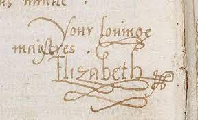

Queen Elizabeth I
Reign: 1558 - 1603
Key Facts.
- Birth: 7th Sept 1533, Greenwich Palace.
- Father: Henry VIII.
- Mother: Anne Boleyn.
- Accession: 17th Nov 1558.
- Coronation: 15th Jan 1559
- Succeeded by: King James VI of Scots, James I of England.
- Greatest Achievement: Defeat of the Spanish Armada 1558.
Key Dates.
- - Feb 1559: House of Commons urges Queen to marry.
- - April 1559: Act of Supremacy and Uniformity establish Elizabeth as the supreme governor of the Church of England.
- - 23rd April 1564: William Shakespeare born.
- - 1568: Mary, Queen of Scots imprisoned by Elizabeth.
- - 1588: Defeats the Spanish Armada.
- - Death: 24th March 1603, Richmond Palace, Surrey.
Britannica Link
Signature of Queen Elizabeth I
